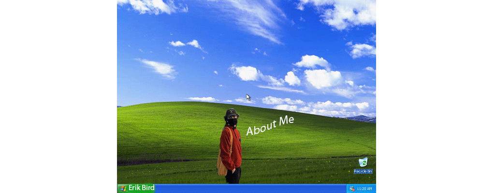

Erik's Biography

My name is Erik Bird. I am a sophomore information management and technology major at Syracuse University. I am interested in information security.
My interests outside of school include hiking, snowboarding, and woodworking.
I currently have a basic working knowledge of HTML and JavaScript, however, I look forward to learning more about front-end web development and building my skillset.
Personal Hobbies
- Snowboarding
- Camping
- Hiking